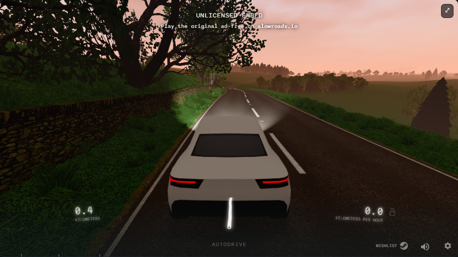

Slow Roads
Drive to unwind, anytime.
This is an unofficial fan site. You will play on the official game.

Browser‑native
No downloads. It runs right in your browser.
Relaxing by design
No timers, no pressure—just the road ahead.
Works on most devices
Smooth on modern desktops and mobile browsers.
Quick Start
Controls
- Drive: WASD or Arrow Keys
- Boost: Shift
- Camera: Mouse drag, C to switch
- Weather & Time: Q / E
- Recovery: R to road, H headlights, B handbrake, P pause
Settings tips
- Visual Quality: Start at Medium; raise if FPS is stable.
- Camera & FOV: Lower for speed, higher for scenery.
- Steering Sensitivity: Tune for keyboard vs. controller.
- Audio: Lower engine, higher ambience for a calmer ride.
Slow Roads is a serene, open‑ended driving experience. There are no ads, no missions, and no finish line—just the scenery and the road.
Set the weather and time to match your mood, put on some music, and simply drive.
School/work network help
- If it fails to load here, we’ll open the official site in a new tab automatically.
- Try another modern browser and disable heavy extensions.
- Some networks block browser games; mobile data or home Wi‑Fi may be required.